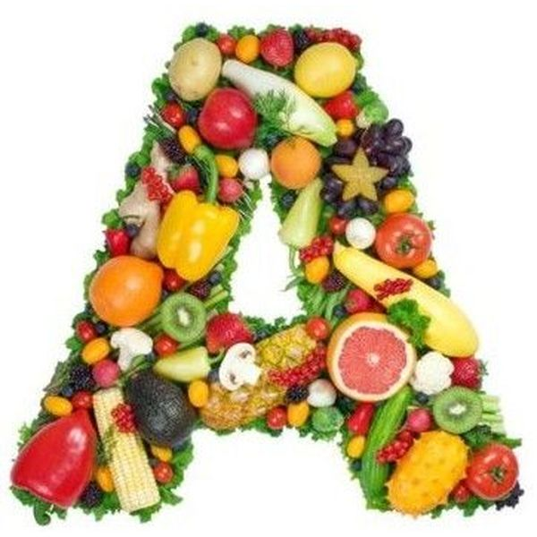
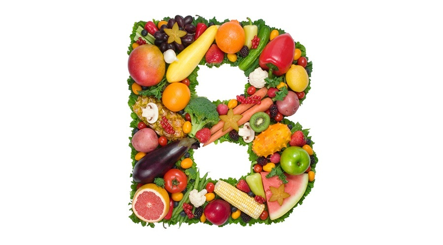
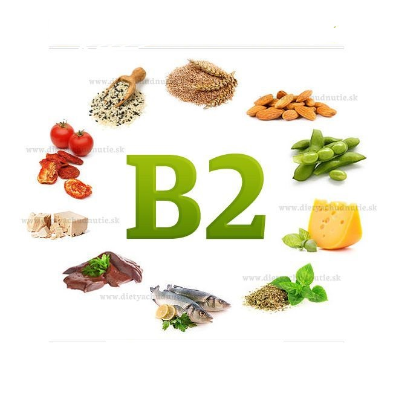
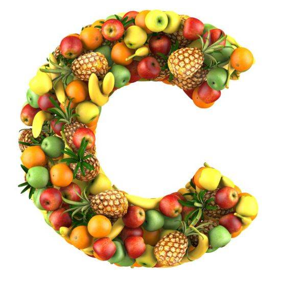
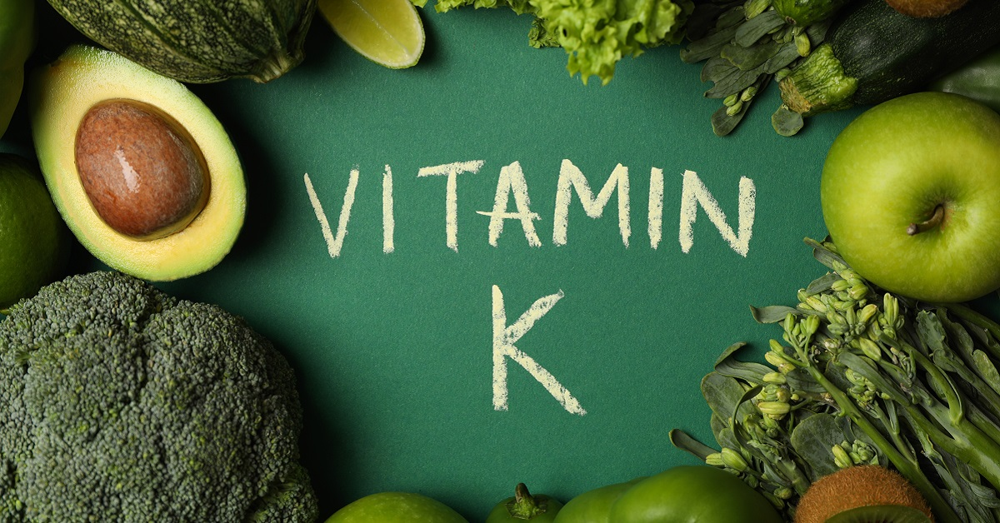
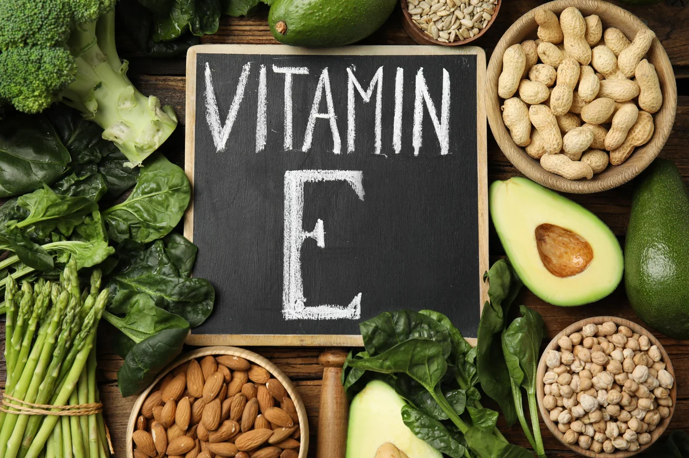

A-vitamin
Funkciója:növekedés, szürkületi látás, a szaruhártya egészsége, fertőzéssel szembeni ellenállás. Hiánya fejlődési zavarokat, farkasvakságot, a bőr szárazságát okozza. Forrásai: tejtermékek, halmájolajak, tojássárgája. A sárgarépában és zöldségfélékben található karotint a szervezet A-vitaminná alakítja.

B1-vitamin
Funkciója:szénhidrát anyagcsere: az idegrendszer működése. Hiánya vizenyősödést vagy végzetes fogyással járó beriberit okoz. Forrásai: élesztő, tojássárgája, máj, búzacsíra, borsó, bab.

B2-vitamin
Funkciója:szövetlégzés. Hiánya a nyelv és az ajak gyulladását okozza. Forrásai: élesztő, élesztő- és húskivonatok, tej, máj, sajt, tojás, zöldségfélék.

B12-vitamin
Funkciója:vérképződés. Hiánya vészes vérzékeny¬séget okoz. Forrásai: élesztő, hús, máj, vese, tej, sajt, tojás, zöldségfélék.

C-vitamin
Funkciója:energiatermelés, anyagcserefolya¬matok, fertőzéssel szembeni ellenállás. Hiánya skorbutot , vérzékenységet, fáradékonyságot okoz. Forrásai: paprika, citrom, zöldségek, gyümölcsök.

D-vitamin
Funkciója:csontok egészséges fejlődése. Hiánya a csontok görbülését, törékenységét, csontlágyulást okoz. Forrásai: napsütés, vaj, halmájolaj.
K-vitamin
Funkciója:Forrásai: bélbaktériumok termelik, külső bevitele általában nem szükséges. növényi olajokban található előanyagot a szervezet alakítja D-vitaminná napsugárzás hatására.

E-vitamin
Funkciója:az idegrendszer, az izomzat és a here normális működéséhez illetve a terhesség ki¬hordásához fontos. Hiánya nem jellemző. Forrásai: növényi magvak és olajok, saláták, zöldfőzelékek, tej, vaj.

Készítő:Hajnal Zoltán